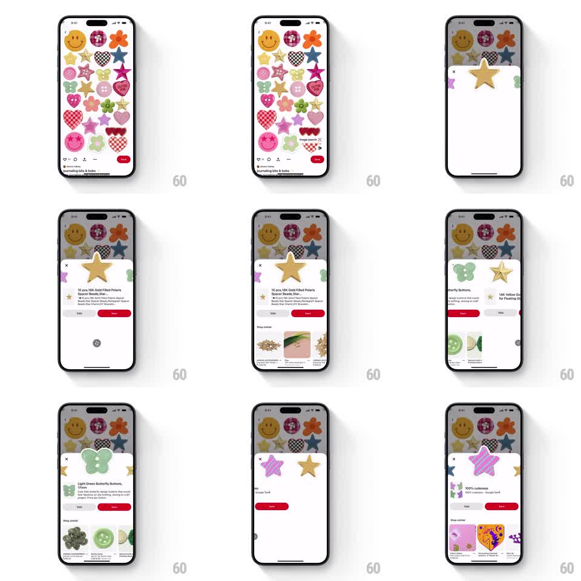

Media
Frame-by-frame

Rebuild this interaction 1:1: Pinterest's visual-search sheet - swiping horizontally cycles through matched items in the bottom sheet, and the product details and similar-items rail update with each swipe.

Rebuild this interaction 1:1: Pinterest's visual-search sheet - swiping horizontally cycles through matched items in the bottom sheet, and the product details and similar-items rail update with each swipe. ## Integration Integration: stack-agnostic spec - springs given as stiffness/damping, timed motions as duration + curve; map every value to your framework and animation library of choice. ## Scene A pin of colorful handmade buttons fills the top; a white bottom sheet shows the matched item (a gold star bead, then a green butterfly, then a striped star) with title, price line, Visit and Save buttons, and a "Shop similar" rail of thumbnails below. ## Motion spec Pattern: horizontal match pager, ~600ms per swipe. - On drag, the matched item image follows the finger (translateX 1:1) while the next match slides in from the drag edge, the sheet itself staying pinned. - On release, the pager springs to the nearest match (stiffness 300 damping 24), the outgoing image exiting fully. - The title and price crossfade to the new match (200ms out, 250ms in) with a slight rise (8px). - The "Shop similar" rail below refreshes with a stagger: old thumbnails fade and shrink (150ms), new ones pop in (scale 0.8 to 1, 60ms stagger). - The pin behind stays dimmed and static; the sheet's grab handle and close button never move. ## Calibration - Only the item area pages - the sheet chrome is fixed. - The rail refresh trails the pager by 100ms so the match lands first. ## Reduced motion Matches crossfade; rail swaps without stagger. ## Don't miss - The matched item sits on the sheet's white background, visually lifted from the pin behind. - Visit and Save buttons persist across swipes; only their target changes.